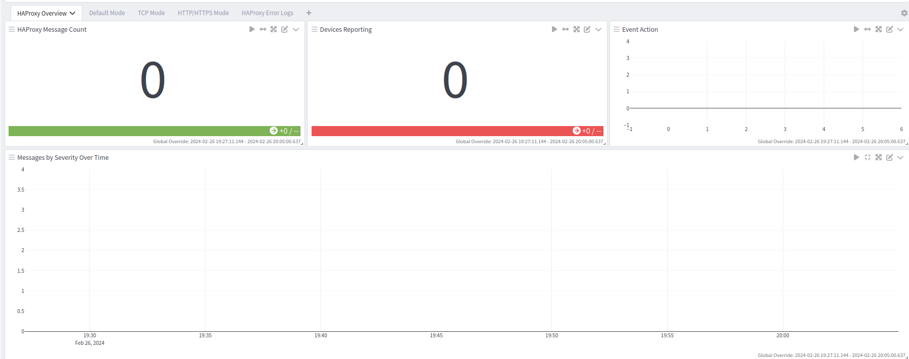
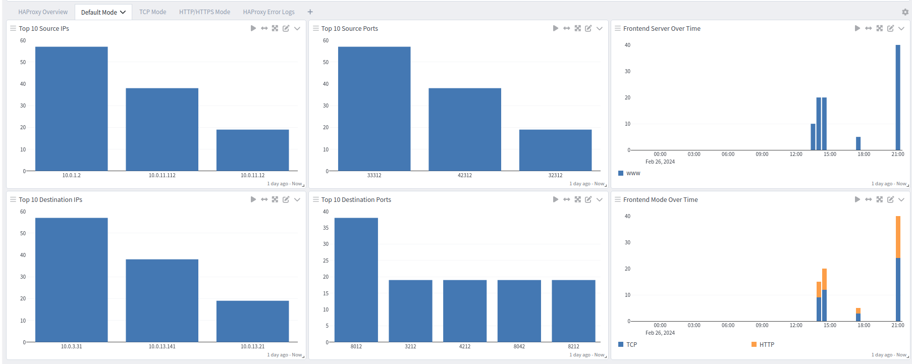
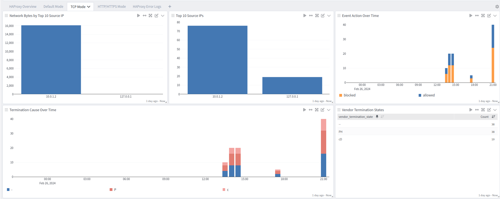
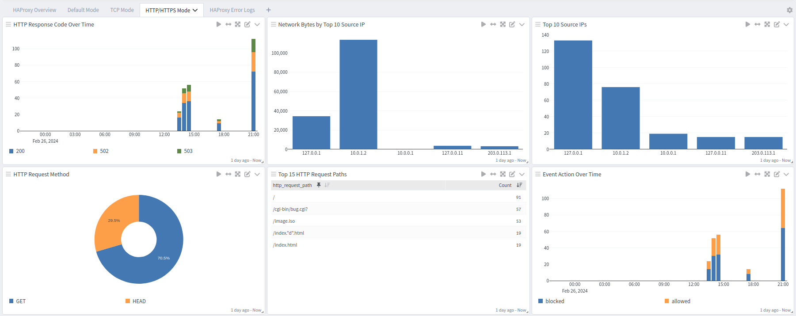
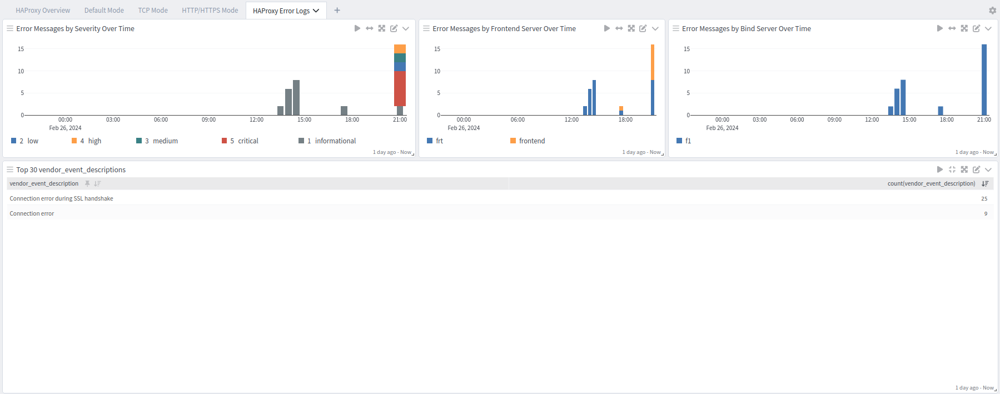

HAProxy is an open-source software solution that provides a high-performance and highly available TCP and HTTP load balancer and proxy server. This technology pack will process HAProxy logs, providing normalization and enrichment of common events of interest.
Tested with HAProxy version 2.9
Logging via syslog (RFC 5424 format recommended) or Filebeat with Graylog Sidecar.
HAProxy HTTP/TCP server on a Linux system.
A syslog or Beats input configured in Graylog matching the IP, port, and protocol for log reception.
This technology pack includes 1 stream:
This technology pack includes 1 index set definition:
HAProxy supports the following log delivery methods:
Syslog (RFC 5424 format recommended)
Filebeat with Graylog Sidecar
Configure HAProxy to send logs via syslog to your Graylog server.
Create a Syslog input in Graylog matching the IP, port, and protocol for log reception.
Configure HAProxy to send logs to the Graylog syslog input. Refer to the official HAProxy logging documentation for configuration details.
Please use the official Graylog Sidecar documentation to configure your Graylog server and your client(s).
Create a Beats input in Graylog.
Install Graylog Sidecar on the HAProxy host.
Configure Filebeat to collect HAProxy log files and forward them to the Graylog Beats input.
HAProxy supports multiple log formats depending on the proxy mode configuration.
haproxy[1234]: Connect from 10.0.1.2:33312 to 10.0.3.31:8012 (www/HTTP)
haproxy[6103]: 127.0.0.1:56059 [03/Dec/2023:17:35:10.380] frt/f1: Connection error during SSL handshake
haproxy[14387]: 10.0.1.2:33313 [06/Feb/2023:12:12:51.443] fnt bck/srv1 0/0/5007 212 -- 0/0/0/0/3 0/0
haproxy[14329]: 10.0.1.2:33317 [06/Feb/2023:12:14:14.655] http-in static/srv1 10/0/30/69/109 200 2750 - - ---- 1/2/3/4/5 6/7 {graylog.eu} {} "GET /index.html HTTP/1.1"
haproxy[1234]: 10.0.1.2:36317 [06/Feb/2023:12:14:14.655] https-in static/srv1 10/0/30/69/109 200 2750 - - ---- 1/2/3/4/5 6/7 {graylog.eu} {} "GET /index.html HTTP/1.1" 0/0/0/0/0 graylog.eu/TLSv1.3/TLS_AES_256_GCM_SHA384
Parsing rules to extract HAProxy logs into Graylog schema-compatible fields.
GIM code 180200 (http communication) for HTTP/HTTPS proxy logs.
GIM code 120000 (network connection) for TCP proxy logs and default connection logs.
Event action detection from HAProxy termination state codes (allowed/blocked).
Event severity mapping from syslog priority levels.
Termination reason enrichment from HAProxy termination state codes.
HAProxy Spotlight dashboards.
GIM categorization is provided for the following log types:
| Log Type | gim_event_type_code | gim_event_category | gim_event_subcategory | gim_event_type |
|---|---|---|---|---|
| HTTP/HTTPS proxy logs | 180200 | http | http.communication | http communication |
| TCP proxy logs | 120000 | network | network.network connection | network connection |
| Default connection logs | 120000 | network | network.network connection | network connection |
| Field Name | Example Value | Field Type | Description |
|---|---|---|---|
| application_name | haproxy | keyword | Set by the Syslog input from the syslog header |
| process_name | haproxy | keyword | Process name parsed from the HAProxy log line |
| process_id | 14387 | keyword | Process ID parsed from the HAProxy log line |
| vendor_event_severity_level | 6 | keyword | Raw numeric severity level from the syslog priority, when present |
| event_severity | informational | keyword | Normalized Graylog severity derived from the syslog priority |
| event_severity_level | 1 | long | GIM severity level (1 to 5) |
| Field Name | Example Value | Field Type | Description |
|---|---|---|---|
| vendor_event_action | Connect | keyword | Action extracted from the default connection log (for example, Connect) |
| vendor_event_description | Connect from 10.0.1.2:33312 to 10.0.3.31:8012 | keyword | Full vendor description of the connection event |
| destination_ip | 10.0.3.31 | ip | Destination server IP |
| destination_port | 8012 | long | Destination server port |
| vendor_frontend_name | www | keyword | HAProxy frontend name |
| vendor_frontend_mode | HTTP | keyword | HAProxy frontend mode (for example, HTTP or TCP) |
| network_transport | tcp | keyword | Transport protocol for the connection |
| Field Name | Example Value | Field Type | Description |
|---|---|---|---|
| source_ip | 10.0.1.2 | ip | Client IP extracted from the HAProxy log line |
| source_port | 33313 | long | Client source port extracted from the HAProxy log line |
| event_received_time | 06/Feb/2023:12:12:51.443 | keyword | Timestamp recorded by HAProxy at the start of the request |
| vendor_frontend_name | fnt | keyword | HAProxy frontend name |
| vendor_backend_name | bck | keyword | HAProxy backend name |
| vendor_server_name | srv1 | keyword | HAProxy server name within the backend |
| vendor_tw | 0 | long | Time spent in HAProxy queues waiting for a free connection (ms) |
| vendor_tc | 0 | long | Time spent waiting for the connection to the server to establish (ms) |
| destination_bytes_sent | 212 | long | Bytes sent to the client |
| vendor_termination_state | -- | keyword | Two or four character termination state code from HAProxy |
| vendor_termination_state_cause | - | keyword | First character of the termination state, indicating the cause |
| vendor_termination_state_closed | - | keyword | Second character of the termination state, indicating the session state at close |
| vendor_termination_reason | No reason (session closed normally) | keyword | Human readable termination reason looked up from the state code |
| vendor_actconn | 0 | long | Total active connections on the HAProxy process at the time of the log |
| vendor_feconn | 0 | long | Active connections on the frontend |
| vendor_beconn | 0 | long | Active connections on the backend |
| vendor_srv_conn | 0 | long | Active connections on the selected server |
| vendor_retries | 3 | long | Number of retries to the server before success or failure |
| vendor_srv_queue | 0 | long | Number of requests queued on the server |
| vendor_backend_queue | 0 | long | Number of requests queued on the backend |
| event_action | allowed | keyword | Normalized action (allowed or blocked) derived from the termination state |
| source_reference | 10.0.1.2 | keyword | GIM source reference enforcement field |
| destination_reference | 10.0.3.31 | keyword | GIM destination reference enforcement field |
| Field Name | Example Value | Field Type | Description |
|---|---|---|---|
| vendor_tt | 5007 | long | Total time the request was active in HAProxy (ms) |
| gim_event_type_code | 120000 | keyword | GIM event type code for network connection |
| Field Name | Example Value | Field Type | Description |
|---|---|---|---|
| vendor_tr | 10 | long | Time to receive the full HTTP request from the client (ms) |
| vendor_trr | 69 | long | Time spent waiting for the server to send the full HTTP response (ms) |
| vendor_ta | 109 | long | Total session active time (ms) |
| http_response_code | 200 | long | HTTP response status code |
| http_request_cookie | - | keyword | Request cookie captured by HAProxy (dash when absent) |
| http_response_cookie | - | keyword | Response cookie captured by HAProxy (dash when absent) |
| http_request_method | GET | keyword | HTTP method of the request |
| http_request_path | /index.html | keyword | HTTP request path |
| http_version | 1.1 | keyword | HTTP protocol version |
| vendor_captured_request_headers | graylog.eu | keyword | Request headers captured by HAProxy, when configured |
| vendor_captured_response_headers | keyword | Response headers captured by HAProxy, when configured | |
| vendor_ssl_fc_sni | graylog.eu | keyword | SNI hostname presented by the client (HTTPS only) |
| vendor_ssl-version | TLSv1.3 | keyword | Negotiated TLS version (HTTPS only) |
| vendor_ssl_ciphers | TLS_AES_256_GCM_SHA384 | keyword | Negotiated TLS cipher suite (HTTPS only) |
| gim_event_type_code | 180200 | keyword | GIM event type code for HTTP communication |
| Field Name | Example Value | Field Type | Description |
|---|---|---|---|
| vendor_frontend_name | frt | keyword | HAProxy frontend name |
| vendor_bind_name | f1 | keyword | HAProxy bind name associated with the error |
| vendor_event_description | Connection error during SSL handshake | keyword | Error description from HAProxy (renamed from vendor_error_description) |
| is_error | 1 | keyword | Flag set to 1 to mark the message for the Error dashboard |
The HAProxy Spotlight offers dashboards with five tabs:




